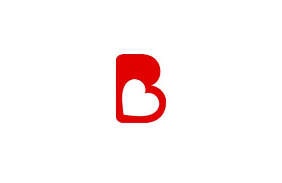
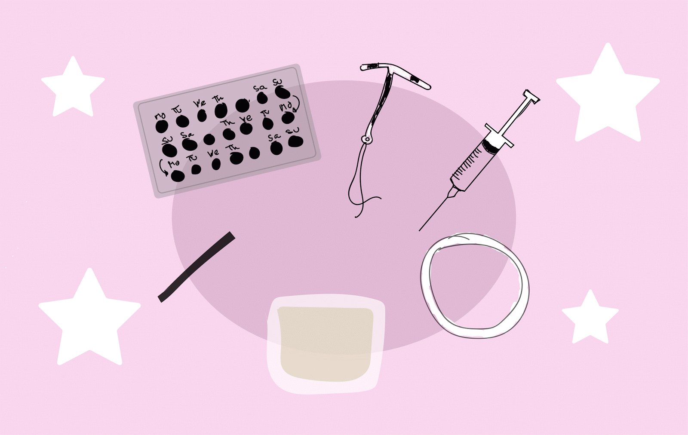

EMBARAZO EN LA ADOLESCENCIA
El embarazo en la adolescencia es un problema grave que afecta a millones de mujeres en todo el mundo, pero, sobre todo, en regiones pobres de África, Asia, Latinoamérica y Europa.
La Organización Mundial de la Salud (OMS) calcula que aproximadamente 17 millones de adolescentes dan a luz cada año. No es ninguna casualidad que el embarazo precoz sea la segunda causa de mortalidad en chicas de 15 a 19 años.
La situación puede deberse a varios factores, pero el contexto suele ser similar. Son jóvenes que viven en zonas pobres y que, por tradición o por cultura, no valoran alternativas al embarazo adolescente.
Sin embargo, es muy importante conocer las causas del embarazo en la adolescencia, los riesgos que tiene asociados y también las consecuencias que puede provocar en la madre, el niño o la niña e incluso su impacto familiar.
¿Cuales son los sintomas de un Embarazo?
El signo principal de embarazo es la falta de uno o más períodos menstruales consecutivos, pero muchas mujeres experimentan otros síntomas de embarazo antes de notar la falta de un período.
La falta de un período no siempre significa que una mujer está embarazada. Las irregularidades menstruales son comunes y pueden tener diversas causas, incluidos el uso de píldoras anticonceptivas, las afecciones como la diabetes y el síndrome de ovarios poliquísticos, los trastornos alimenticios y algunos medicamentos. Ante la falta de un período, las mujeres deben consultar a su proveedor de atención médica para saber si están embarazadas o si tienen otro problema de salud.
Los síntomas de embarazo varían de una mujer a otra. Una mujer puede experimentar todos los síntomas comunes, solo algunos o ninguno. Algunos de los signos de embarazo temprano incluyen:
Sangrado leve
Mamas o pezones sensibles o hinchados
Fatiga
Dolores de cabeza
Náuseas y/o vómitos
Antojos o aversiones a la comida
Cambios en el estado de ánimo

RIESGOS DE UN EMBARAZO EN LA ADOLESCENCIA
Tener un hijo a temprana edad conlleva muchos riesgos, tanto para la madre como para el bebé
El cuerpo todavía no se encuentra preparado completamente para poder llevar un embarazo de manera adecuada, de control normal. Entonces puede haber ciertos riesgos tanto de parto pretérmino como de amenazas de aborto al inicio del embarazo y para él bebe
Riesgos que muchas veces las pacientes a esta edad, no tienen la madurez a nivel física y psicológica para poder llevar y comprender la dificultad de un embarazo. Muchas veces no tienen dietas adecuadas, no tienen los cuidados necesarios, entonces los bebés pueden nacer con algún tipo de complicación como respiratorias por alguna contaminación, porque la paciente no le dio importancia a infecciones que se dieron en el embarazo o porque la paciente no tiene los cuidados necesarios y el bebé no tiene una dieta adecuada y esto va a generar que el bebé tenga un poco de bajo peso al nacer o que el niño tenga algún grado de prematurez al momento de nacer”.
Prevención de los embarazos de adolescentes
La mayoría de profesionales de la educación y la salud señalan que para reducir el número de embarazos en adolescentes es necesaria una completa educación sexual, el acceso a los métodos anticonceptivos (tanto precoitales, coitales como postcoitales) así como a los servicios de planificación familiar
También es necesaria la información y el apoyo por parte de los padres de los adolescentes en cuestiones relativas al sexo,
Relaciones y métodos anticonceptivos.
Los sistemas de prevención de embarazo en la adolescencia vigentes en Holanda han servido de modelo para muchos países europeos y lo son para otros muchos.
